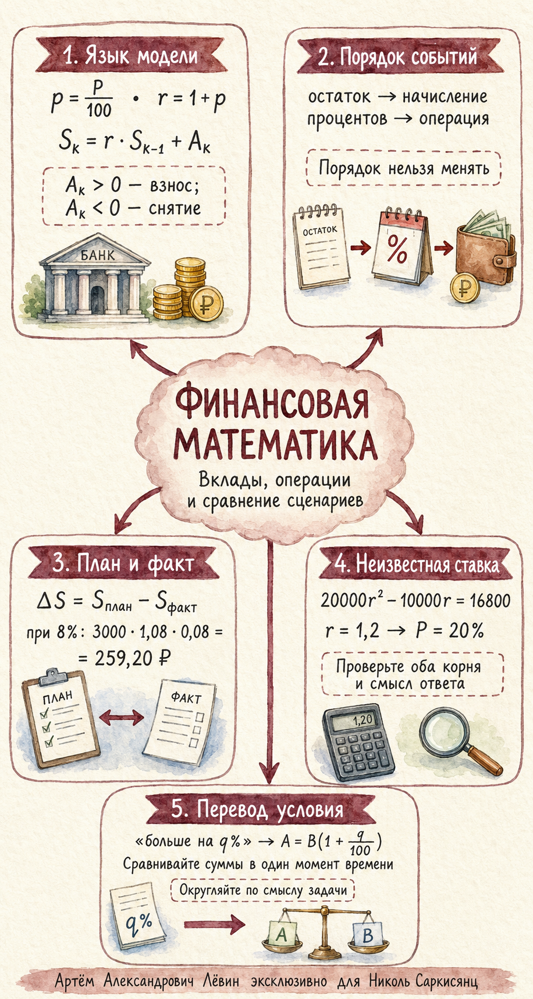

Математика · 18 июля 2026 · ЕГЭ
Сравнение вкладов и поиск ставки
Вклады с пополнениями и снятиями: рекуррентная модель, сравнение сценариев, квадратное уравнение и смысловое округление.
Математика · 18 июля 2026 · ЕГЭ
Вклады с пополнениями и снятиями: рекуррентная модель, сравнение сценариев, квадратное уравнение и смысловое округление.
01 · Основа
Сначала проценты, затем операция.
— взнос; — снятие.
Запишите и .
Укажите знаки и порядок действий.
Для трёх лет план равен ; факт строится рекуррентно.
Решите уравнение, проверьте корни, единицы и округление.
02 · Сравнение
При 8% после первого года сняли 3000 ₽, после второго вернули 3000 ₽.
03 · Уравнение
После первого года −20 000 ₽, после второго +10 000 ₽; отставание 16 800 ₽.
Отрицательный коэффициент не подходит. .
04 · Перевод текста
На 48,5% больше: .
При тыс. ₽ получаем 240 тыс. ₽.
, поэтому минимальная целая ставка — 9%.
05 · Закрепление
Три средних, шесть выше среднего и одна сложная задача.

Нажмите «Новая задача».
60 000 ₽ под 5% на два года без операций.
100 000 ₽ под 10%; после первого начисления +5000 ₽, после второго операций нет.
90 000 ₽ под 12%; после первого начисления −15 000 ₽. Найдите сумму после второго начисления.
При 8% после первого года −3000 ₽, после второго +3000 ₽. Найдите отставание.
3600 тыс. ₽ под 10%; два одинаковых взноса. Через три года рост 48,5%. Найдите взнос.
A: 10%, 10%, 10%. B: 11%, 11% и целая ставка. Минимальная третья ставка для B?
После первого начисления −12 000 ₽, после второго +6000 ₽. Отставание 8970 ₽. Найдите целую ставку.
250 000 ₽ под 7%; после первого начисления +10 000 ₽, после второго −5000 ₽. Итог после третьего.
A: 9%, 9%, 9%. B: 10%, 10% и целая ставка. Минимальная третья ставка для B?
При 10% после первого начисления − ₽, после второго + ₽. Отставание 7700 ₽.
| № | Ответ |
|---|---|
| 1 | 66 150 ₽ |
| 2 | 126 500 ₽ |
| 3 | 96 096 ₽ |
| 4 | 259,20 ₽ |
| 5 | 240 тыс. ₽ |
| 6 | 9% |
| 7 | 15% |
| 8 | 312 359,75 ₽ |
| 9 | 8% |
| 10 | 10 000 ₽ |
Код самопроверки: 1807
Мини-квиз